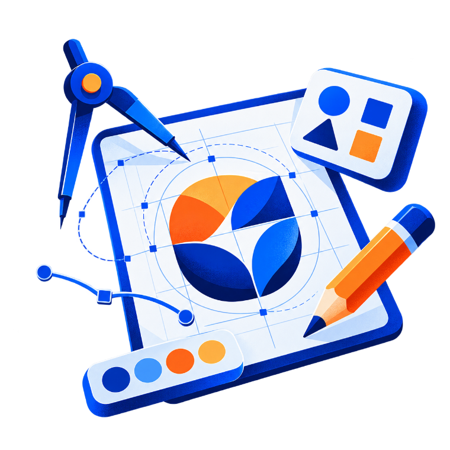

Logo tasarımı nasıl ilerler? Brief’ten teslime 5 adım
İyi bir logo tek bir ilham anında çıkmaz. Markayı anlamakla başlayan, birkaç yönün denendiği ve her ölçüde test edilen bir süreçle oluşur.

1. Brief: markayı ve hedefi anlamak
Çizime geçmeden önce markanın ne yaptığını, kime seslendiğini ve rakiplerinden nasıl ayrışmak istediğini netleştiriyoruz. Bu aşamada şu sorulara cevap ararız:
- Marka ne vaat ediyor? Tek cümleyle anlatılabilen bir fikir, logonun da çıkış noktası olur.
- Hedef kitle kim? Gençlere seslenen bir kahve markasıyla bir hukuk bürosunun dili aynı olmaz.
- Logo nerede kullanılacak? Uygulama ikonu, tabela, ambalaj ya da kartvizit; her biri farklı gereksinimler doğurur.
2. Araştırma ve moodboard
Sektördeki logoları, kullanılan renkleri ve tipografi alışkanlıklarını inceliyoruz. Amaç kopyalamak değil, kalabalığın nerede toplandığını görüp markayı oradan ayırmak. Ardından renk, biçim ve ton için bir moodboard hazırlayıp yönü birlikte onaylıyoruz.
3. Eskiz ve yön önerileri
Kâğıtta ve vektörde onlarca deneme yapıyor, bunların içinden birbirinden belirgin biçimde farklı 2–3 yön seçiyoruz. Her yön kısa bir gerekçeyle sunulur: neden bu biçim, neden bu harf yapısı, neden bu renk.
İpucu: Yönleri değerlendirirken "beğendim mi?" yerine "markamı anlatıyor mu?" sorusunu sormak daha sağlıklı sonuç verir.
4. Geliştirme ve ölçek testleri
Seçilen yönü geometriyle düzeltiyor, harf aralıklarını ve kalınlıkları dengeliyoruz. Logoyu 16 piksellik bir favicon boyutunda, tek renkte, koyu ve açık zeminde test ediyoruz. Küçükte okunmayan ya da tek renkte dağılan bir logo, ne kadar güzel olursa olsun sahada sorun çıkarır.
5. Teslim: logo değil, sistem
Teslimde yalnızca tek bir dosya vermiyoruz. Paket genellikle şunları içerir:
- Ana logo, yatay ve dikey varyasyonlar, simge
- Renk kodları (CMYK, RGB, HEX) ve tipografi seçimi
- Koruma alanı ve minimum boyut kuralları
- Vektör (AI, SVG, PDF) ve görsel (PNG) formatlarında kaynak dosyalar
Bu kurallar, logonun bir yıl sonra bir fuar standında ya da bir sosyal medya gönderisinde aynı şekilde görünmesini sağlar.
Bu konuda bir işin mi var?
Projeni konuşalım ↗